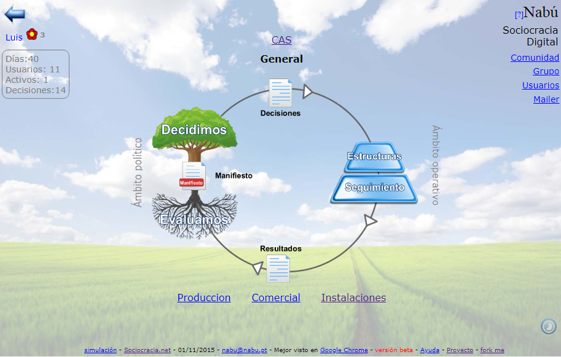
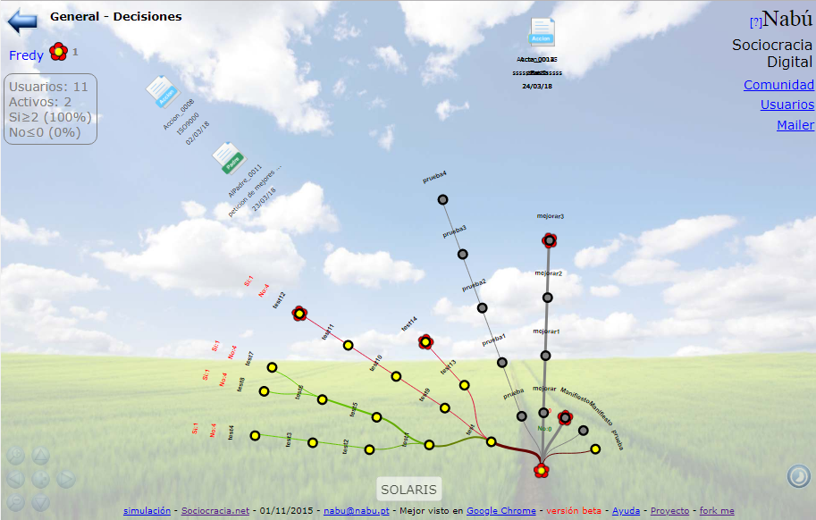
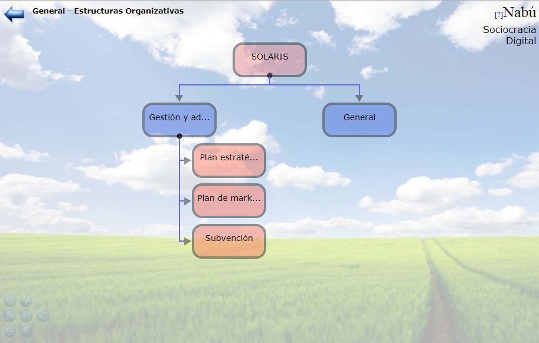
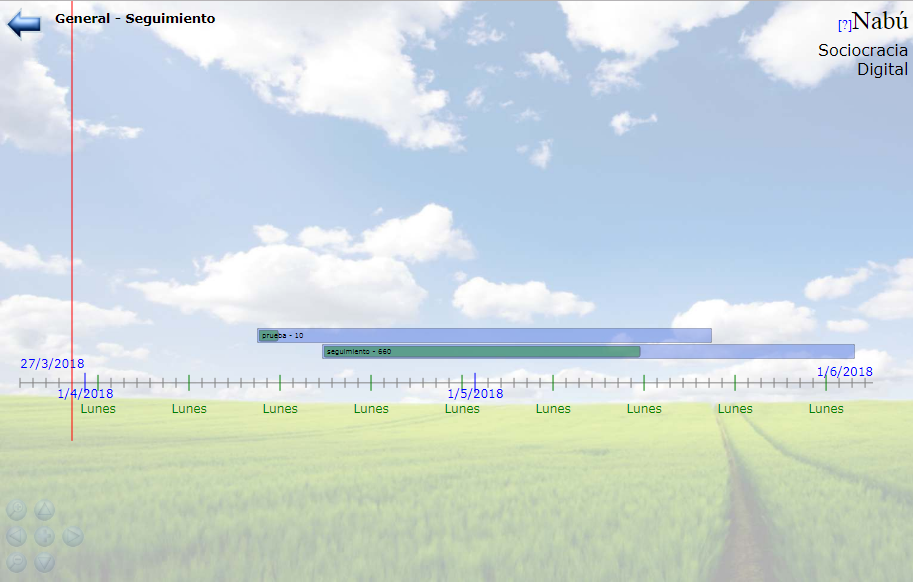
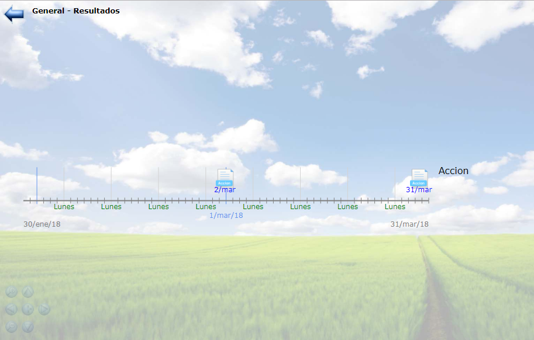
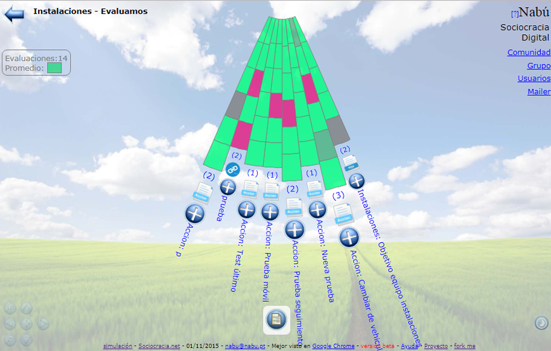
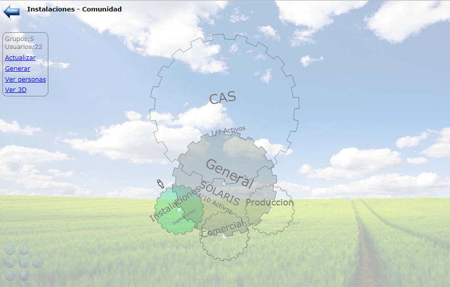
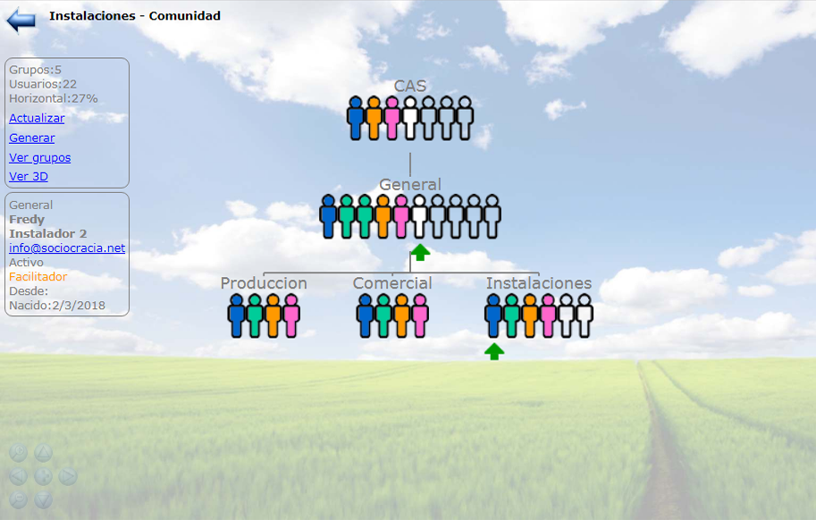
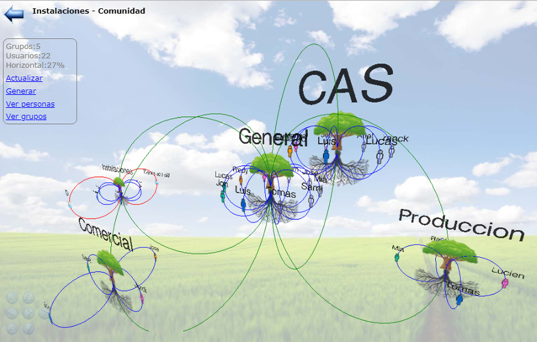

Basado en Torus Network
Dios babilonio de la sabiduria y la escritura
Introducción
Nabú es una herramienta online que implementa metodologías de grupo orientadas a la organización y sincronización de intereses.
Comenzando por la toma de decisiones grupales, la definicion de estructuras organizativas, seguimiento de proyectos y evaluacion grupal final.
La geometría social que organiza a las personas se ajusta a enfoques mas jerarquicos o mas horizontales permitiendo una participación mas igualitaria
en todas sus fases del ciclo evolutivo del grupo.
Nabú se basa en Torus Network
Torus network
Este es el documento que describe y dá fundamento a este método:
El proyecto
Nabú es un proyecto de software libre que podrás encontrar en https://github.com/sabtvg/nabu
Estado: Versión estable, en fase de puesta en marcha
Fundamento cooperativo
Todo grupo se define a partir de intereses comunes y se requiere un espiritu cooperativo en los procesos participativos para avanzar
como unidad a través de decisiones consentidas.
El consentimiento grupal es un proceso cooperativo.
No se elige, se construye entre todos.
Ciclo evolutivo
Toda acción grupal provoca el inicio de un ciclo evolutivo que comienza con una decisión y acaba con una evaluación de lo sucedido, donde se da
por finalizada la acción o se inicia otro ciclo evolutivo. Todas las fases están diseñadas desde la participación grupal creando consciencia de grupo.
Ciclo evolutivo

Decidimos: Árbol de decisiones

Todas las propuestas conforman un árbol interactivo de intereses y tendencias. Los debates evolucionan hasta alcanzar el consentimiento grupal.
Decisiones: Historico de decisiones
 Historico de decisiones grupales
Historico de decisiones grupales
Estructuras organizativas

Las estructuras solo pueden definirse y modificarse a través de decisiones grupales.
Seguimiento de acciones

Seguimiento público del avance en la implementación de decisiones tomadas en grupo.
Resultados: Historico de documentos de resultado

Publicaciones de resultados de acciones implmentadas.
Evaluación grupal de resultados

Todo tema es evaluable y es punto de partida de nuevos debates.
Escalabilidad
La unidad organizativa mínima es el Grupo y está identificado por unos intereses comunes que se definen en el primer documento a debatir:
el Manifiesto. Luego los grupos pueden relacionarse para crecer y formar una Comunidad.
Una aplicación de Nabú (un servidor físico) permite crear muchos grupos y relacionarlos entre sí, incluso con grupos ya existentes en otra
aplicación Nabu (otro servidor físico). Esto permite una implementación distribuida de una comunidad, respetando los intereses locales,
tecnologicos y de seguridad de cada grupo.
La composición de grupos en comunidades sigue un patrón de crecimiento fractal, lo cual permite escalar en cualquier dirección.
Todo grupo puede subdividirse en grupos mas específicos o reagruparse en grupos mas generales.
El tamaño de un grupo es relativo a la cohesion entre sus miembros. Puede haber grupos de 30 a 50 personas donde todos se conocen y todos
participan activamente en los procesos organizativos o grupos de 500 a 1000 personas (o mas) donde porcentajes pequeños de diferentes personas participan
activamente en diferentes procesos de la organización.
El crecimiento de una comunidad puede darse de dos maneras bien diferenciada, o incluso una combinación de ellas.
Crecimiento top-dopwn
Un grupo existente decide subdividirse en grupos mas específicos mantiendo el grupo original como representación de los nuevos sub grupos.
Crecimiento bottom-up
Varios grupos deciden crear un grupo mas general con un Manifiesto mas amplio representando a todos los grupos en uno solo.
Los grupos originales siguen existiendo aunque ahora hay un grupo nuevo que realiza las gestiones entre ellos.
Comunidad: Grupos

Grupos que forman una comunidad.
Comunidad: Personas

Personas que forman una comunidad.
Comunidad: 3D

Grupos y personas que forman una comunidad.
Realización
Nabú se diseña y construye como una adaptación tecnológica a metodologías sociocraticas ortientadas a la organización grupal.
Idea y desarrollo: Sabrina nabu@nabu.pt
En estrecha colaboración con Sociocracia.net
Vida del proyecto
- 10/01/15: Inicio del proyecto, investigación y definición
- 13/04/15: Presentación del proyecto piloto en la cooperativa integral catalana
- 06/08/15: Presentación del proyecto a P2PFoundation
- 01/09/15: Publicación online Versión 1.0 Beta
- 01/09/15: Publicación como proyecto de software libre en github
- 06/11/15: Presentación del proyecto en el hackmeeting 2015
- 06/11/15: Presentación en Congreso de Soberania Tecnológica Sobtec.cat
- ??/01/16: Presentaciónes internas para los socios de la CIC
- 26/06/16: Presentación en CivicLab Barcelona
- 10/06/16: Presentación estudio piloto sobre Nabú por Maria Haberer y Tuben Angles Regos en Academia.eu
- 04/03/17: Presentación en Congreso de Soberania Tecnológica Sobtec.cat (ver video)
- 20/05/17: Presentación para el grupo Debian en el DebianSunCamp2017
- 06/07/17: Presentación en el LAB de proyecto Decidim del ayuntamiento de Barcelona (presentacion completa)
- 01/01/18: Fusión con sociocracia.net
Actualmente en puesta en marcha en diferentes grupos siguiendo la metodología sociocrática
Colaboradores
Nabú es un proyecto de software libre y se desarrolla a partir de colaboraciones, donaciones y el ingreso de servicios complementarios.
Nabú es tuyo y toda colaboración es bienvenida.